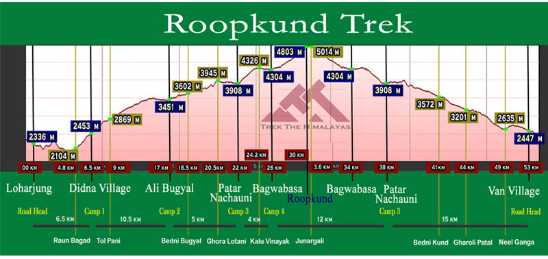

ROOPKUND TREK

OVERVIEW
- Region :- Uttarakhand
- Duration :- 8 Days
- Grade :- Moderate To Difficult
- Max Altitude :- 15,696 Ft.
- Approx Trekking Km :- 53 Kms.
Roopkund ,in the state of Uttarakhand in India, is a famous glacial lake. This lake is famous due to more than five hundred skeletons of humans that are found at the edge of the lake. It is located in the Himalayas and rests at an altitude of nearly 4,800 meters. Roopkund is located in the Chamoli district of Garhwal. It is one of the best sites for Trekking in Garhwal. It is closer to hill stations like Nainital and Kathgodam. At a distance of 217 km from Nainital and 235 km from Kathgodam, Roopkund is one of the major adventure attractions for people in the country and also for people who are travelling from abroad. Roopkund, which is located in the lap of Trishul massif is also known as the ‘mystery lake’. You can find human skeletons at the bank of the lake and it is believed that they belong to the Palaeolithic age.
These are believed to be the skeletons of the heroes who had fought here in the earlier times. Along with the skeletons of humans, you can also find skeletal structure of horses and other animals. There are reports that these skeletons belong to the 12th century to the 15th century. It is believed by specialists that the death of many people in this region was a result of landslides, blizzard or an epidemic. The human skeletons were re-discovered in 1942 by H K Madhwal, who was a Nanda Devi Game reserve ranger.
Brief Itinerary
- Day 1 :- Kathgodam to Lohajung
- Altitude 7,662 ft.
- Stay in guest house.
- Drive 210 km (10 hrs drive)
- Local market and network is available.
- Pick up time 06:00 am at the parking of Kathgodham railway station.
- Route:- Kathgodam - Bheem Tal - Almora - Kausani - Gwaldam - Dewal - Lohajung.
- Day 2 :- Lohargunj to Didna Village
- Trek 6.5 km.
- 7,662 to 8,045 ft.
- Reach Didna before lunch.
- accommodation in village home stay.
- No local market but Network is available.
- Till ruan bagad bridge gradual descent (4.5 km).
- Refill your water bottle at ruan bagad bridge from Neel Ganga river.
- After ruan bagad bridge 2 hours of a steep ascent to Didna Village (2 km)
- Day 3 :- Didna Village to Ali Bugyal
- Trek 10.5 km.
- 8,045 to 11,320 ft.
- Accommodation in tent.
- Carry water and ors both.
- Reach Ali Bugyal by late noon.
- Keep your wind and waterproof handy.
- Tolpani is the last point for drinking water.
- First half of is through oak and rhododendron forest (Steep ascent).
- Second half of the trek is through big alpine meadows (gradual ascent).
- Day 4 :- Ali Bugyal to Patar Nachauni via Bedni Bugyal and Ghora Lotani
- Trek 7 km.
- 11,320 to 12,818 ft.
- Easiest day of the trek.
- Accommodation in tent.
- Reach Patar Nachauni before lunch.
- Ali Bugyal to Bedni Bugyal (gradual ascent 2 km).
- Bedni Bugyal to Ghora Lotani (gradual ascent 4 km).
- Ghora Lotani to Patar Nachauni (gradual descent 1 km).
- Spend some time at Ghora Lotani good for acclimatization.
- Ware proper clothing (this is the place where most of the trekkers get AMS).
- Day 5 :- Patar Nachauni to Bhagwabasa via Kalu Vinayak
- Trek 4 km
- 12,818 to 14,117 ft.
- Accommodation in tent.
- Reached Camp site by lunch.
- Patar Nachauni to Kalu Vinayak Tempel .
- (First 1 km is gradual ascent and rest 1.5 km is steep ascent).
- Kalu Vinayak to Bhagwabasa (gradual descent 1.5 km, become tricky in may and June ).
- There will be snow on the trail in the month of may and jun and in sep and oct it will be a rocky trail.
- Day 6 :- Bhagwabasa to Roopkund to Patar Nachauni
- Trek 10 km.
- 14,117 to 15755 ft.
- Accommodation in tent.
- Start your trek by 4:00 am
- Climb to Roopkund is 3 km.
- Challenging day of the trek.
- Carry energy bars, ors and water.
- Breakfast will be at Roopkund top.
- Reach Bhagwabasa back by lunch time.
- Reach Patar Nachauni camp by evening.
- In Aug, Sep, Oct can see skeleton but no snow.
- In May and Jun snow will be there but can't see the skeleton.
- Day 7 :- Patar Nachauni to Lohajung via Bedni and Wan
- Trek 15 km.
- 12,818 to 7,662 ft.
- Accommodation in guest house.
- Patar Nachauni to Ghora Lotani (1 km gradual ascent).
- Ghora Lotani to Bedni Bugyal ( 4 km gradual descent).
- Bedni Bugyal to Doliya Dhar ( 0.5 km gradual walk).
- Doliya Dhar to Ghaeroli Patal ( 3 km steep descent ).
- Ghaeroli Patal to Neel Ganga ( 4 km steep descent ).
- Neel Ganga to Ranka Dhar ( 1 km moderate ascent ).
- Ranka Dhat to Wan Village road head ( 1.5 km gradual descent).
- Wan Village to Loharjung ( 45 minutes drive, road condition is not good).
- Route :- Patar Nachauni - Ghora Lotani - Bedni Bugyal - Doliya Dhar - Ghaeroli Patal - Neel Ganga - Ranka Dhar - Wan Village - drive to Lohajung.
- Day 8 :- Loharjung to Kathgodam
- 10 hrs drive.
- Drive 210 km.
- Reach Kathgodam by 6:00 pm.
- On the way to Kathgodam at Kausani you can buy herbal tea and some souvenir.